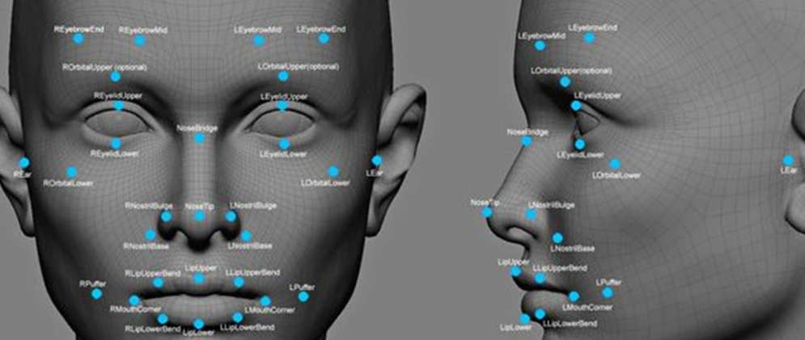
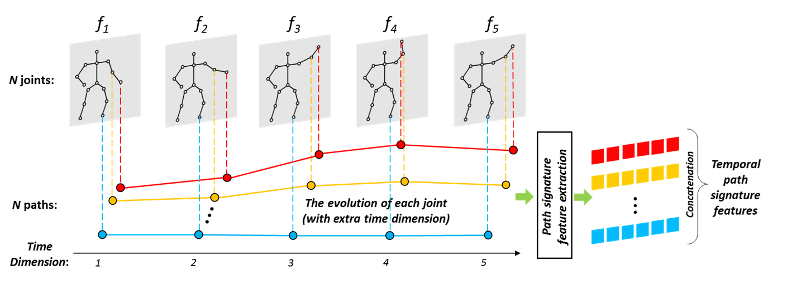

Work
Through this project we are trying to give ideas,codes and understanding on how we can work on the emotion detection and human activity recognotion projects in computer vision. We would also be providing information on the various application these topics have in the real world. We would also be making a login page for the user to visit our website for viewing the ideas, codes and understanding on the work.
Human Emotions Importance
Humans show a great deal of variability in their abilities to recognize emotion. A key point to keep in mind when learning about automated emotion recognition is that there are several sources of "ground truth," or truth about what the real emotion is. Suppose we are trying to recognize the emotions of Alex. One source is "what would most people say that Alex is feeling?" In this case, the 'truth' may not correspond to what Alex feels, but may correspond to what most people would say it looks like Alex feels. For example, Alex may actually feel sad, but he puts on a big smile and then most people say he looks happy. If an automated method achieves the same results as a group of observers it may be considered accurate, even if it does not actually measure what Alex truly feels. Another source of 'truth' is to ask Alex what he truly feels. This works if Alex has a good sense of his internal state, and wants to tell you what it is, and is capable of putting it accurately into words or a number. However, some people are alexithymic and do not have a good sense of their internal feelings, or they are not able to communicate them accurately with words and numbers. In general, getting to the truth of what emotion is actually present can take some work, can vary depending on the criteria that are selected, and will usually involve maintaining some level of uncertainty.

Human Activity Recognition
Human activity recognition plays a significant role in human-to-human interaction and interpersonal relations. Because it provides information about the identity of a person, their personality, and psychological state, it is difficult to extract. The human ability to recognize another person’s activities is one of the main subjects of study of the scientific areas of computer vision and machine learning.
As a result of this research, many applications, including video surveillance systems, human-computer interaction, and robotics for human behavior characterization, require a multiple activity recognition system.
Among various classification techniques two main questions arise: “What action?” (i.e., the recognition problem) and “Where in the video?” (i.e., the localization problem). When attempting to recognize human activities, one must determine the kinetic states of a person, so that the computer can efficiently recognize this activity. Human activities, such as “walking” and “running,” arise very naturally in daily
life and are relatively easy to recognize. On the other hand, more complex activities, such as “peeling an apple,” are more difficult to identify. Complex activities may be decomposed into other simpler activities, which are generally easier to recognize. Usually, the detection of objects in a scene may help to better understand human activities as it may provide useful information about the ongoing event (Gupta and Davis, 2007).
